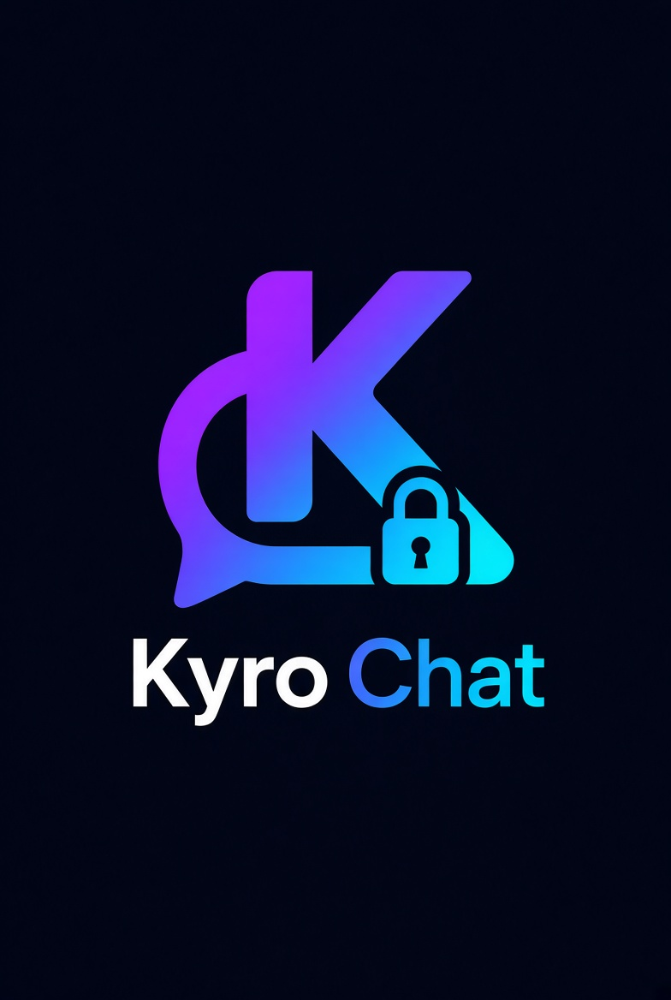
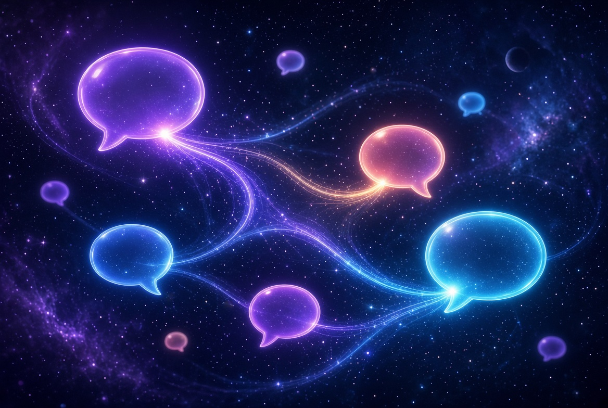
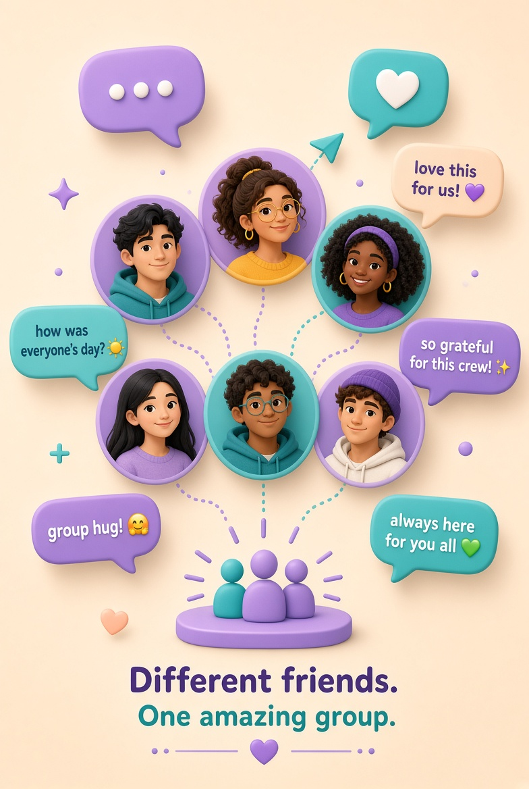
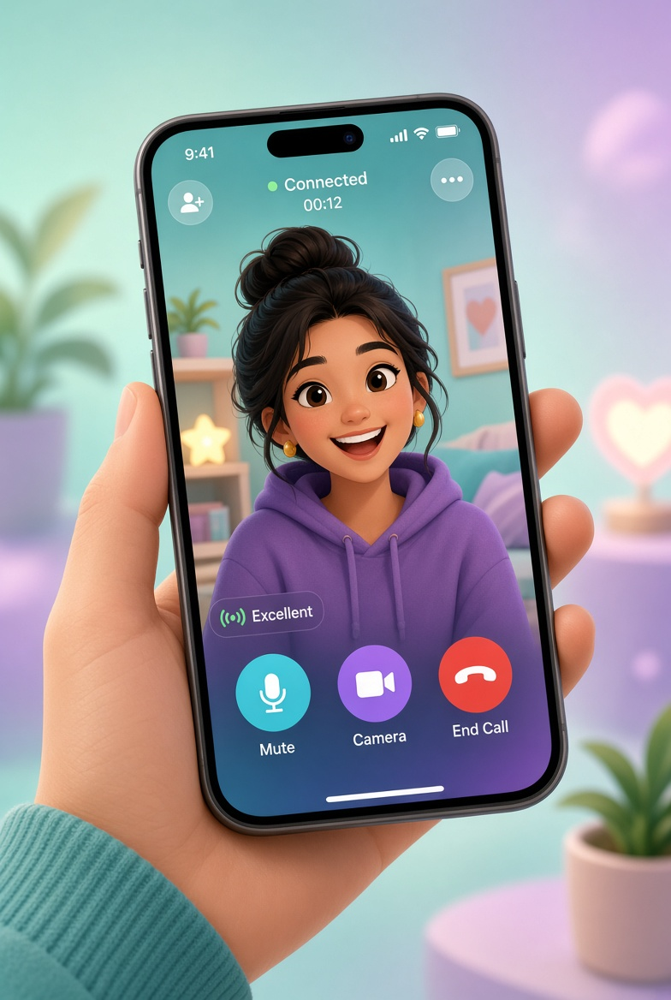
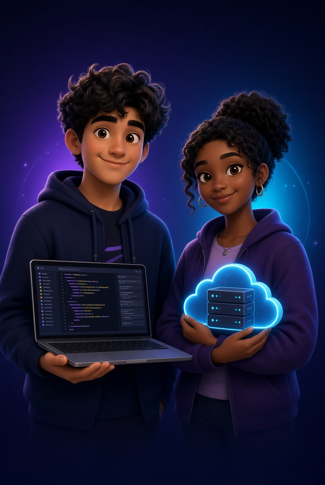

Kyro Chat
A new way to talk
Welcome to Kyro Chat
Fast, private, and beautifully simple messaging built for real conversations — with friends, groups, and communities you actually care about.
Your space stays yours
Enjoy messages with enhanced privacy
Conversations are protected so only the people you choose can read them. No noise, no extra eyes — just you and the people you trust.

Together is better
Connect easily with friends in groups & communities
Create groups, join communities, and keep everyone in the loop. Share updates, plans, and laughs without the chaos.
Built to protect
Enhanced security you can feel
Strong encryption, careful design, and privacy-first choices — so Kyro Chat stays safe without getting in your way.

Talk like you’re there
Make seamless calls
Jump from a chat into a crystal-clear voice or video call in one tap. Stay close, even when you’re far apart.

The people behind Kyro
Founded by Carl Tech & Jose Grid
Kyro Chat is split into two repos: one for the frontend and one for the backend. This project is the frontend — the screens, animations, and chat UI you see here.
Join us today
Create your free account and start chatting with better privacy, groups, and calls — all in one place.